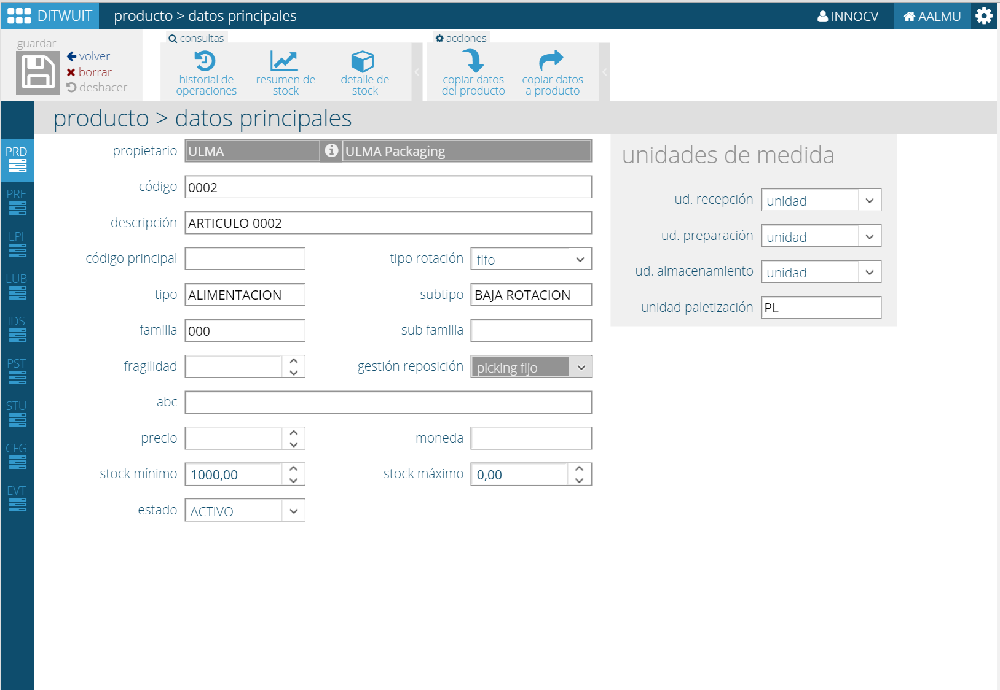

Datos Principales¶
{kind=link}
Permite indicar los datos principales del artículo.
Propietario. Organización propietaria de la mercancía.
Código. Código del artículo.
Descripción. Descripción del artículo.
Código principal. Permite indicar un código de nivel superior.
- Tipo rotación. Permite indicar cómo rota el artículo:
- FIFO. Primera entrada, primera salida.
- Caducidad
- Lote
Tipo, subtipo, familia y subfamilia. Una estructura que permite la clasificación de los artículos.
Fragilidad. Permite indicar la fragilidad del producto para poder realizar el proceso de preparación en función de la fragilidad.
Gestión reposición. Permite estable el tipo de reposición de mercancía a las ubicaciones de picking. Por defecto la gestión es picking fijo.
ABC. Permite indicar una clasificación ABC.
Precio. Opcionalmente se puede indicar un precio para el producto.
Moneda. Moneda aplicada al precio.
Stock mínimo. Stock mínimo del producto.
Stock máximo. Stock máximo del producto.
Estado del producto. Estado del producto (ACTIVO, INACTIVO, ELIMINAR)
Unidades de medida¶
En esta opción es posible indicar las unidades de medida en la que ver la información.
Toda la información de stock en DITWUIT es almacenada en unidades mínimas. Para facilitar consultar la información en cada área del almacén es posible indicar la unidad en la que se desea ver la información.
Por ejemplo, si deseamos consultar l información en la recepción en cajas se indica que la unidad de recepción es la caja.
Es posible indicar dicha información para:
- Unidad de recepción. Unidad de media en la que mostrar la información de la mercancía a recibir.
- Unidad de preparación. Unidad de medida en la que mostrar la información de la mercancía a preparar.
- Unidad de almacenamiento. Unidad de medida en la que consultar el stock.
Consultas¶
A continuación se detallan las consultas a las que se puede acceder desde esta pantalla:
{kind=link}
{kind=link}
{kind=link}
{kind=link}
{kind=link}